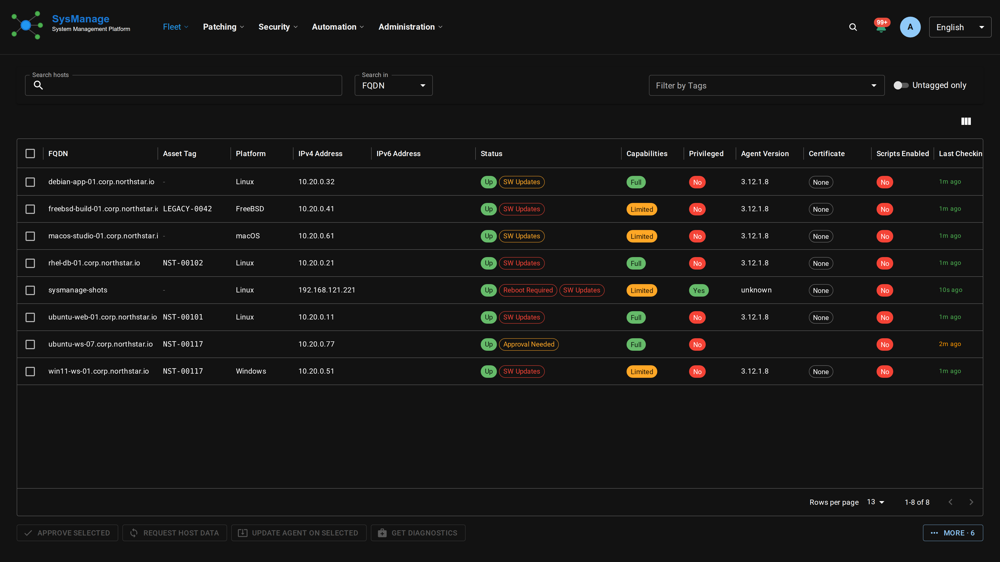
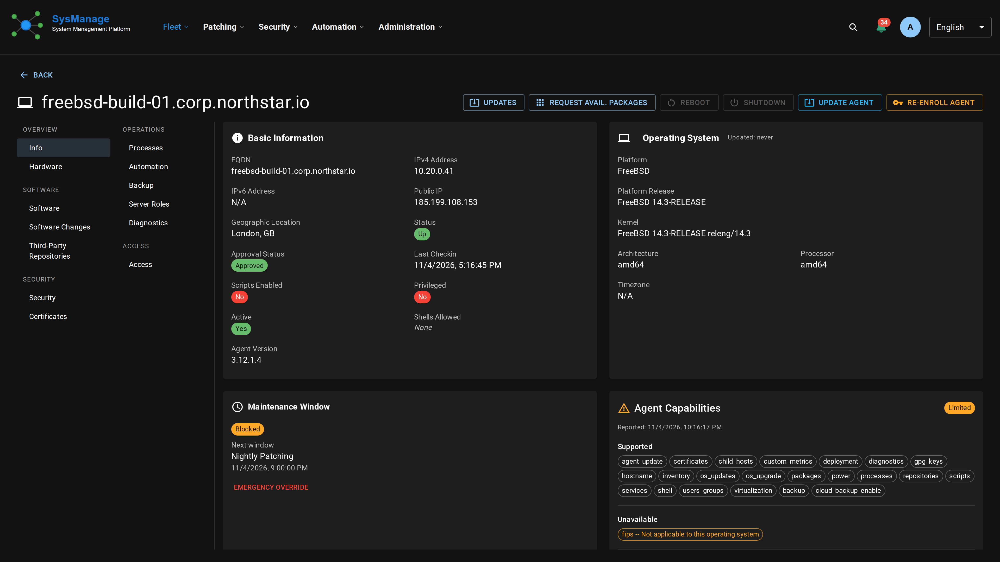
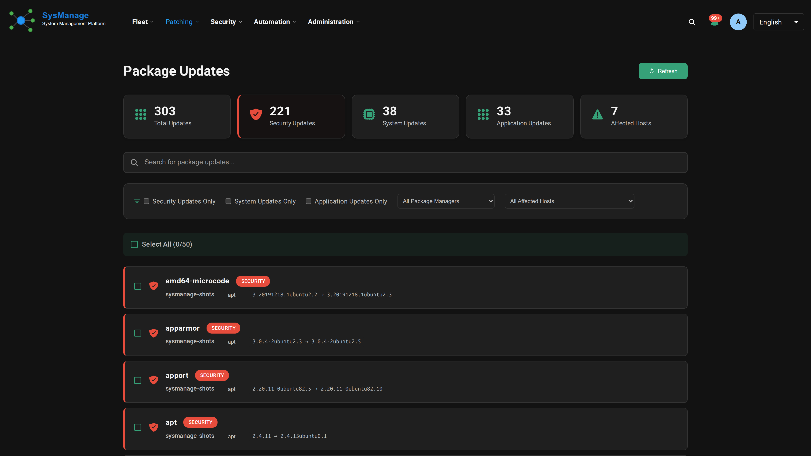
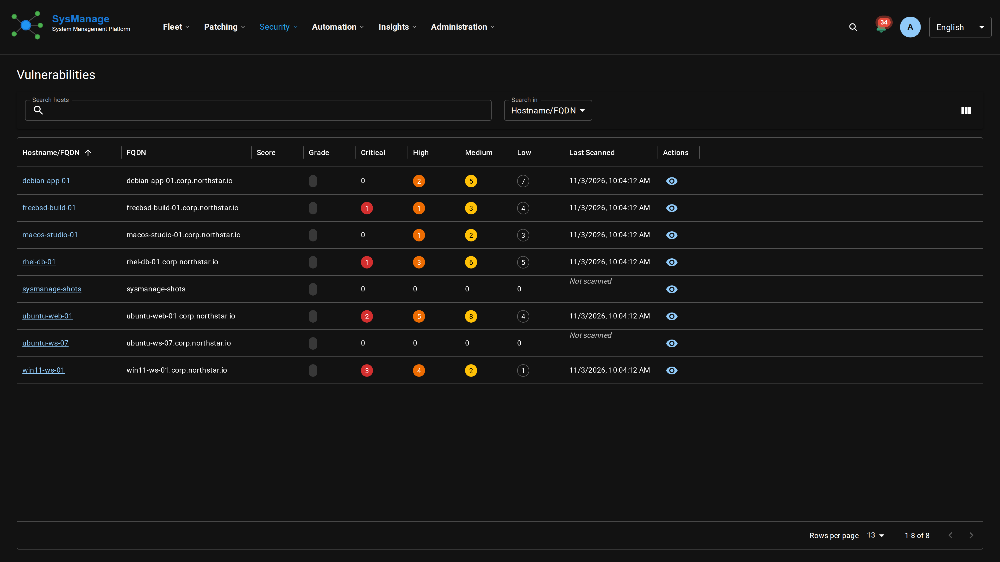

Every new operating system shouldn't require another management product.
One control plane for your entire infrastructure
Manage Windows, Linux, macOS, FreeBSD, OpenBSD, and NetBSD from a single platform. Infrastructure teams don't manage operating systems -- they manage fleets.
Bring inventory, patching, vulnerabilities and compliance for a mixed fleet into one platform -- and run it as a single environment.
Monday, 9:04 a.m.
A critical vulnerability drops. Where do you even start?
- Windows is in Intune.
- Ubuntu is in Landscape.
- RHEL is in Satellite.
- macOS is in Jamf.
- The BSDs are managed with scripts somebody wrote years ago.
- Vulnerability scanning lives somewhere else.
- Compliance reporting lives somewhere else again.
You have opened six consoles before you have patched a single host -- and you still cannot answer the only question anyone is actually asking: are we exposed?
That is the problem SysManage was built to solve.
One fleet view. Fewer disconnected workflows. Faster decisions.
One fleet view
Every Windows, Linux, macOS, FreeBSD, OpenBSD and NetBSD host in one inventory: what is installed, what needs updating, what is vulnerable and what changed -- from one agent and one console.
Fewer disconnected workflows
Patching, OS upgrades, maintenance windows, scripts and compliance checks run the same way across the fleet, under one security model and one audit trail. Keep the specialist tools that earn their place -- EDR, MDM, configuration management -- and stop stitching the everyday work together by hand.
Faster decisions
When a critical vulnerability lands, answer "are we exposed?" from one screen, roll the fix out in a maintenance window, and show afterward that it happened.
Inventory, updates, OS upgrades and maintenance windows are in the free Community edition. Vulnerability scanning and compliance checks start at Professional. Compare editions.
See it on a mixed fleet
Real screens from the product, on Linux, Windows, macOS and FreeBSD hosts.




Start with the problem you have
Infrastructure operations
Inventory, patching, OS upgrades and maintenance windows for Windows, Linux, macOS and the BSDs, without a tool for each.
For infrastructure teams →Security and compliance
Vulnerability exposure, CIS and DISA STIG checks, malware detection and an audit trail that cover the whole fleet, not one operating system.
For security teams →Managed service providers
Many client fleets on one platform, each in its own database with its own credentials, run from one operator console.
For MSPs →See it on your own fleet
Install Community on two of your operating systems in about thirty minutes, or talk to us about evaluating Professional or Enterprise in your environment.